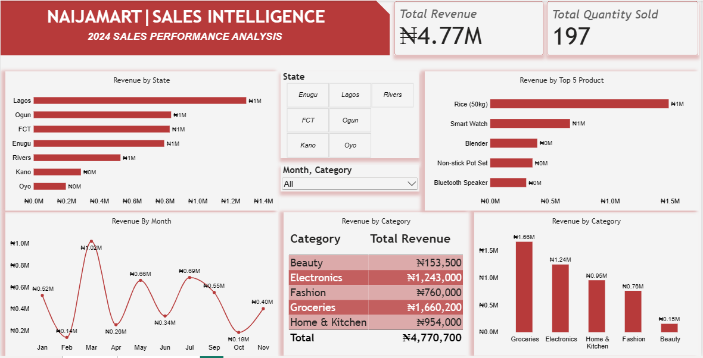

FEATURED DATA ANALYTICS PROJECT
2024 Sales Performance & Business Intelligence Analysis
Transforming retail sales data into meaningful business insights through data analysis, visualization and evidence-based recommendations.
Explore Project01 / PROJECT OVERVIEW
NaijaMart Sales Intelligence is a retail sales analytics project focused on evaluating business performance using historical sales data from January to November 2024. The project explores revenue performance, product contribution, category performance, monthly sales trends, geographical distribution and customer purchasing behaviour. The objective is to transform raw transactional data into actionable insights that can support business planning, performance monitoring and better decision-making.
02 / DATASET & METHODOLOGY
The analysis was conducted using a retail sales dataset containing transactional, customer, product, pricing and geographical information.
| Dataset Indicator | Value |
|---|---|
| Analysis period | January – November 2024 |
| Transaction records | 60 |
| Unique orders | 27 |
| Customers | 17 |
| Products | 16 |
| Product categories | 5 |
| Geographical locations | 7 |
| Total quantity sold | 197 units |
03 / DASHBOARD PRESENTATION
The Power BI dashboard provides a visual overview of NaijaMart's sales performance, highlighting key performance indicators, geographical revenue, top products, monthly trends and category contribution.

04 / OVERALL BUSINESS PERFORMANCE
Total Revenue
Total Quantity Sold
Unique Orders
Customers
NaijaMart generated total revenue of ₦4,770,700 from 197 units sold across 27 unique orders during the analysed period.
05 / CATEGORY PERFORMANCE
| Category | Revenue | Contribution |
|---|---|---|
| Groceries | ₦1,660,200 | 34.8% |
| Electronics | ₦1,243,000 | 26.1% |
| Home & Kitchen | ₦954,000 | 20.0% |
| Fashion | ₦760,000 | 15.9% |
| Beauty | ₦153,500 | 3.2% |
Groceries was the leading revenue-generating category, contributing approximately 34.8% of total revenue. Electronics followed with 26.1%. Together, these two categories accounted for approximately 60.9% of total revenue.
Beauty recorded the lowest category revenue at ₦153,500, representing approximately 3.2% of total revenue. Its performance presents an opportunity for further investigation.
06 / PRODUCT PERFORMANCE
| Product | Revenue |
|---|---|
| Rice (50kg) | ₦1,488,000 |
| Smart Watch | ₦665,000 |
| Blender | ₦392,000 |
| Non-stick Pot Set | ₦352,000 |
| Bluetooth Speaker | ₦300,000 |
Rice (50kg) was the highest revenue-generating product, contributing approximately 31.2% of total revenue. The five leading products collectively generated approximately 67% of total revenue.
07 / MONTHLY PERFORMANCE
| Month | Revenue |
|---|---|
| January | ₦524,800 |
| February | ₦140,000 |
| March | ₦1,021,500 |
| April | ₦255,900 |
| May | ₦662,600 |
| June | ₦336,000 |
| July | ₦688,800 |
| August | ₦0 |
| September | ₦552,000 |
| October | ₦185,600 |
| November | ₦403,500 |
08 / GEOGRAPHICAL PERFORMANCE
| State | Revenue | Contribution |
|---|---|---|
| Lagos | ₦1,295,700 | 27.2% |
| Ogun | ₦837,800 | 17.6% |
| FCT | ₦828,900 | 17.4% |
| Enugu | ₦795,500 | 16.7% |
| Rivers | ₦529,000 | 11.1% |
| Kano | ₦287,800 | 6.0% |
| Oyo | ₦196,000 | 4.1% |
Lagos generated the highest revenue, contributing approximately 27.2% of total sales. Oyo recorded the lowest geographical revenue contribution at approximately 4.1%.
09 / CUSTOMER & ORDER ANALYSIS
The dataset contained 17 customers and 27 unique orders. Customer-level analysis identified differences in revenue contribution and purchasing activity.
| Customer | Revenue |
|---|---|
| Customer A | ₦804,900 |
| Customer B | ₦771,300 |
| Customer C | ₦482,000 |
| Customer D | ₦476,000 |
| Customer E | ₦401,200 |
The two highest-contributing customers generated approximately 33% of total revenue combined. This highlights the importance of customer retention and repeat-purchase strategies.
Average order value was approximately ₦176,693, calculated by dividing total revenue by the 27 unique orders.
Two notable orders were identified:
10 / MAJOR BUSINESS OBSERVATIONS
Groceries and Electronics account for approximately 60.9% of total revenue.
Rice (50kg) contributes approximately 31.2% of overall revenue.
Revenue varies significantly across months, with March recording the highest performance.
Lagos leads geographical revenue performance, while Oyo records the lowest contribution.
The two highest-contributing customers represent approximately one-third of revenue.
Beauty generates only approximately 3.2% of total revenue.
August has no recorded transactions, requiring further data validation.
11 / BUSINESS RECOMMENDATIONS
12 / PROJECT CONCLUSION
The NaijaMart Sales Intelligence project demonstrates how retail sales data can be transformed into meaningful business insights. Through data preparation, SQL querying, exploratory analysis and Power BI dashboard development, the project identified revenue patterns, leading products, category performance, customer contributions and geographical differences. The findings provide a foundation for more informed inventory planning, customer retention, market development and performance monitoring.
This project reflects my developing capabilities in Data Analytics, Business Intelligence, data visualization and business-focused analytical storytelling.
Back to Main Portfolio